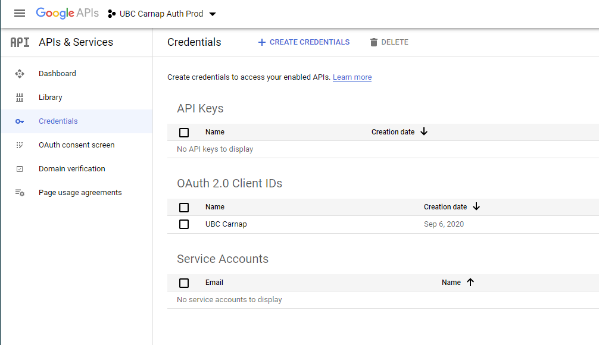
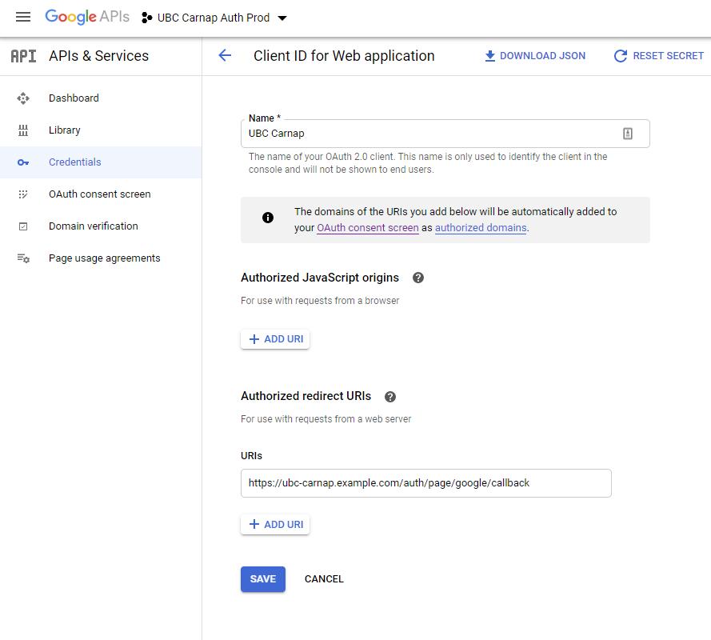
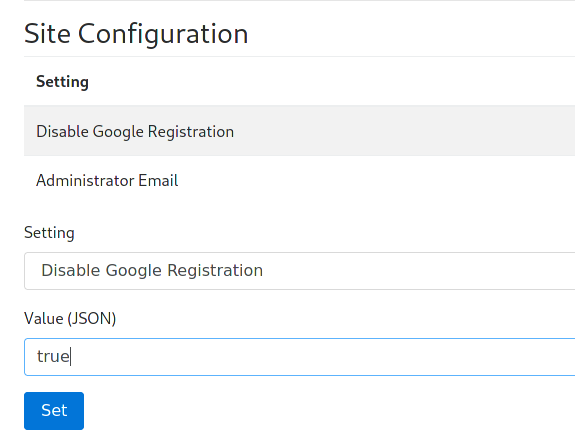

23 Carnap deployment and administration
23.1 General information
The build infrastructure around Carnap supports two deployment modes: Stack builds for use with the Keter web server on traditional Linux servers and Nix builds for use on Docker or NixOS servers. Stack with Keter is used on Carnap.io. An experimental prebuilt Docker image is available.
If you would like to build Carnap yourself using Nix directly, see the development README.
We provide Nix packaging as the server attribute returned by default.nix for use in NixOS and NixOps.
If you wish to work with Carnap’s Nix infrastructure outside the Docker images, it is highly recommended to use Cachix to avoid having to build anything that our Continuous Integration has already built.
23.2 Requirements
- PostgreSQL database with a user (TODO: which privileges do they need on their database?)
- Writable persistent directory to give as the
dataroot - Google API key (see below for information on how to configure it)
23.3 Server setup
23.3.1 Docker
There is experimental Docker support for Carnap. Images are available via the GitHub container registry at ghcr.io/carnap/carnap/carnap:latest.
There is a sample docker-compose environment with automatically-managed Caddy based HTTPS termination, the recommended PostgreSQL database, and full setup instructions available in the Carnap documentation repository here.
Docker configuration details
Carnap in Docker can most effectively be configured with environment variables. See the example settings file for a list. A volume should be provided at /data for persistent data such as documents.
At minimum, the following environment variables must be configured:
APPROOTGOOGLEKEYGOOGLESECRET
23.3.2 Manual setup summary
If you want to set up Carnap manually (Docker is recommended instead):
Files:
/var/lib/carnap(or whatever you’re using asDATAROOT), writable by yourcarnapuser you’re running the server as, with subdirectories:staticfromCarnap-Server/static(copying symlinks if you’re deploying it)configfromCarnap-Server/configbookfromCarnap-Bookbook/cachedirectory createddatadirectory created
Environment Variables:
APPROOT=https://carnap.example.comDATAROOT=/var/lib/carnapBOOKROOT=/var/lib/carnap/book
Assuming you’re using PostgreSQL (... values are replaced with their respective real values):
SQLITE=falsePGHOST=...PGPORT=...PGUSER=...PGPASS=...PGDATABASE=...
23.3.3 Settings file
Carnap uses a settings file, settings.yml, to store its configuration. You can find the example version at Carnap-Server/config/settings-example.yml
The version in Carnap-Server/config/settings.yml is bundled within the executable. To utilize binary caching, Nix builds directly use the example configuration file, and users are expected to use environment variables or provide a different YAML file at runtime.
You can provide a different settings file at runtime by passing it as the first argument to the Carnap-Server executable. Also, all settings are configurable by environment variables, which is useful for Docker deployments (see the example configuration for a list of these settings).
23.3.4 dataroot
Carnap requires a writable dataroot, configured with the DATAROOT environment variable, to store documents and the cookie encryption key in.
This directory can also contain a subdirectory srv, whose contents are directly available at /srv/ on the Carnap instance. This is used for documentation on the production instance at carnap.io.
23.3.5 Database
Due to a bug that breaks migrations on SQLite in our database library, production deployments of Carnap should use PostgreSQL databases. Set the environment variable SQLITE=false and supply PGUSER, PGPASS, PGHOST, and if required, PGPORT and PGDATABASE for your PostgreSQL database instance.
If you wish to use peer authentication via Unix socket on a locally hosted PostgreSQL database, set all of PGUSER, PGPASS, PGHOST and PGPORT to empty strings.
23.3.6 NixOps
The Carnap team at UBC uses NixOps to automatically deploy Carnap on DigitalOcean servers running NixOS. It’s currently experimental and documentation is a work-in-progress, but the configuration files are public.
23.4 Authentication
Two authentication schemes are supported by Carnap, both of which require some configuration. Production Carnap deployments currently require Google authentication to be configured for administration purposes, even if it is not intended to be used by students.
See the LTI 1.3 documentation for details on how to configure that system after completing setup.
23.4.1 Google authentication
Setting up Google authentication requires setting up a Google APIs project.
First, create the project: https://console.developers.google.com/cloud-resource-manager
Then, create an OAuth2 client ID: https://console.developers.google.com/apis/credentials
It will show up like this:

On the client ID page, set an Authorized Redirect URI for https://YOURDOMAINHERE/auth/page/google/callback:

On your OAuth2 Consent Screen tab, no scopes need to be added as Carnap just needs emails to log in.
Once you’ve configured all the information on the Google side, fill it in the Carnap configuration file or environment variables:
google-api-key/GOOGLEKEY: your Google Client IDgoogle-secret/GOOGLESECRET: your Google Client secret
23.5 Post installation first-time setup
23.5.1 Becoming administrator
Go to your newly minted Carnap instance and log in with Google. Enter your name and register. Then, go to https://YOURDOMAINHERE/admin_promote and click the button. You will now be the administrator of this instance. Multiple administrators are supported (with manual database editing), but there is not yet user interface to enable this.
You can manage the site including promoting instructors, managing students, and configuring LTI platforms at https://YOURDOMAINHERE/master_admin.
23.5.2 Once you’re an administrator
After you have become administrator, check the following items on the master_admin page:
Ask anyone who needs to be instructor to log in and register, then promote them to instructor.
If you don’t want to allow further Google registrations (if you intend to use LTI with your learning management system for student login, setting this option is recommended), enter
truefor “Disable Google Registration” under the “Site Configuration” heading:
Screenshot of the site configuration heading Anyone who has logged in already with Google can still log in, but new registrations will be prevented.
This can be disabled temporarily at any time if more instructors need to be added.
Configure login with LTI 1.3 compatible learning management systems using the LTI guide.